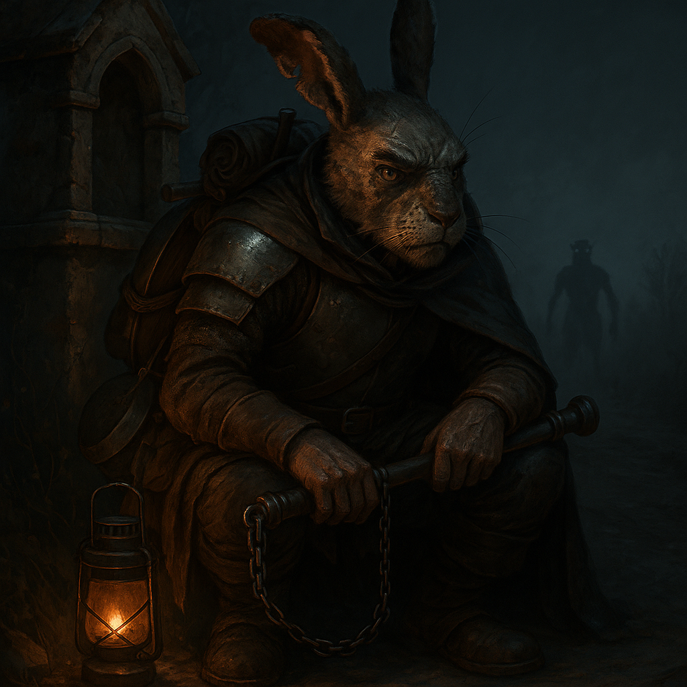

Donner¶
Keywords: Haunted, Bruiser, Horror, Survival, Cynic, Team efforts.
⚠️ Content Warning: Body horror, survivor's guilt, sacrifice of innocents. Session Zero this character.

"You're still not too old for me to tell you to finish your kale like a good boy. I made plum tea for dessert. Clean your mug first, you filthy ape."
Cynical, gruff and haunted by the young one he sacrificed to stay alive; keeps others alive with blunt advice and kale stews.
Basic Information¶
Species: Harengon
Class: Fighter 5 (Battle Master)
Background: Farmer
Age: 40
Alignment: Lawful Evil
Quick Intro¶
Quick Intro
At the Table
- Cynical survivor who adopts a pragmatic, cerebral view to cope with what he did
- Gruff but not unkind; has hundreds of anecdotes from his time as smallfolk for former, catastrophic adventuring parties
- Fears the Revenant that hunts him; wants to survive at all cost, and has stopped asking himself if he even deserves it
- Close-range fighter, cunning strategist, and tank who thinks ahead
Backstory (Short Form)
Donner spent a decade as a servant in the League of Magnificents, watching companions die one by one under the Paladin Sir Gilliam's reckless charismatic leadership. When an ancient Lizardfolk Revenant destroyed the League, Donner survived by sacrificing his own assistant—a young man who trusted him. Now the Revenant hunts him still, and Donner keeps moving, cooking hardy meals and trying to outrun both the monster and his guilt.
Playing Donner
- Combat: Tactical bruiser using Battle Master maneuvers to control the battlefield, protect allies, and survive through preparation and positioning.
- Roleplay: Blunt, pragmatic, superstitious. Low Charisma but competent; speaks in gruff observations and dark humor. Enjoys cooking and insists the party eat properly.
- Party Synergy: The reluctant dad who feeds you, criticizes your technique, and keeps you alive despite his worldview that everyone's ultimately on their own.
Deep Dive¶
Deep Dive
Full Background¶
Donner was born under a bad omen in a small Harengon warren. From his earliest days he felt the need to compensate, to prove he could manifest luck where fate had shortchanged him. But that luck just never came. By his late teens, restless and dissatisfied, Donner left home to find his fortune.
He thought he'd found it when he caught the attention of Sir Gilliam, a splendid paladin who led the League of Magnificents. Gilliam hired Donner to tend the royal gryphon, guard the camp, mind the horses, and keep the baggage line in order. The League was full of dazzling personalities: bards, warriors, wizards. Donner found himself dragged into their adventures together with the rest of the entourage of servants.
Over the next decade, Donner saw a pattern emerge: Gilliam's bombastic charisma recruited new blood as fast as the League lost it. Every adventure ended in tragedy. Every bold heroic charge left another grave in its wake. Gilliam never slowed down or reconsidered. And Donner, the quiet guard at the edges, had to watch as companions cycled through, dying one by one.
This shaped Donner's creed: the world is inherently bad. Survival isn't about luck, but wits and preparation. Every good thing in life is hammered into being through labor and vigilance, not gifted by fortune or divine will. He became brash, blunt, and unflinching in his judgments, a man unwilling to let another Gilliam drag him to perdition with sweet promises of glory.
The League came to an end when Gilliam's reckless crusade finally unleashed a foe that was beyond them: an ancient Lizardfolk Revenant, a seemingly invincible spirit that cut them all down and fed on them with reptilian cruelty. Only Donner and the entourage survived, retreating under his hasty organization. But the Revenant didn't stop. It lingers, hunting not only those who trespassed against it but anyone still in the vicinity of the temple that day.
Character & Psychology¶
Donner is Lawful Evil, but he's not cruel and doesn't entertain master plans of world domination. He just lacks faith and has a worldview you can feel sorry for, but not exactly fault, given what he's witnessed from the likes of the Paladin Gilliam. With his low Charisma Donner has never rallied others to his cause, never learned to feel he gets something back by being generous and earnest. Instead, he's learned to keep his head low and think ahead. At least he minds his own business and doesn't sacrifice others unless he's desperate. And that's what goes for decency in his world.
Donner enjoys cooking (is proficient), and makes hardy, cheap, nutritious food that keeps you full and going. And he makes abundantly clear in his gruff but not unkind manners that you should eat your veggies. Food is the grease that keeps the war machine going.
Donner is no fan of religion. He's seen too many clerics get eaten. Gilliam's grandstanding Paladin vows of righteous vindication started sounding hollow after the third funeral. Against the Revenant though, seeking hallowed ground is often the best option. He's ambivalent about it.
Personality Traits: A cynical survivor who adopts a pragmatic, cerebral view to cope with what he did.
Ideals: The world is full of terror and pain, and you're either the prey or the predator. Cooperation is smart, but in the end, everybody has to keep themselves closest.
Bonds: Tries to uphold a small network of contacts. Workshop with your DM to fit your particular setting.
Flaws: Has a superstitious streak. He's a Harengon who tries to shield himself from bad luck.
The Dirty Secret¶
The Revenant is after all the smallfolk in Gilliam's expedition, including Donner. And at this point he suspects he's the only one left. But that's how he managed to escape before. By giving the Revenant someone it wanted, his own assistant who was learning to cook from him. A young man who trusted him. Donner has seen exactly how the Revenant kills, and what awaits him at the end of the line. If he ever confesses what he's done, it would be a heavy moment.
"You think you've seen death? You haven't. Not like this. The Revenant doesn't strike you down. It... takes you apart. Slow. Starts at the belly, keeps you alive for the worst of it. Pulls you open like a doll splitting at the seams, stuffing splatting on the ground. Tongue like a rope... sliding inside the chest cavity, pulling until it's slurping your insides like a bowl of goddamn noodles. And you don't die quick. In the end there's nothing left of you but a wet slab of meat, too raw to even scream. I watched it. I let it happen. Gave it my assistant, so it wouldn't take me. Judge me all you want, but that's how I got away. That's why I'm still breathing. One day, it'll be me. And I'll know exactly what's coming. Gods... He was just a boy."
Sample Quotes¶
"Don't thank me for saving your ass. Train harder."
"Gryphon dung isn't so bad actually. Except that one time when it ate a Spore Druid. It was like... fucking... brown smoke."
"So a kid fell down the well? Can she swim? Climb? Fucking splendid. What do they teach kids these days? We'll get in trouble unless we fish her up."
"You're still not too old for me to tell you to finish your kale like a good boy. I made plum tea for dessert. Clean your mug first, you filthy ape."
"Gilliam's squire puked his guts out in the middle of a charge 'cause he lived on dried meat and ale. Didn't end well for him. Pass the carrots."
"Once saw Gilliam cave in the head of a Basilisk in one swing. With a statue. Of the cleric. It broke. He claimed it was 'what she would have wanted.'"
"Patience! I know they're getting sooty, but that one fucker's still thrashing. Unless you grill the tentacles till they stop twitching, you're in for a fucking wild night on the privy."
"You wanna feel lucky? Sure, grab my hare's foot. It's been in a boot all day. [Solemnly removes boot] Ah, that's the smell of some splendid fucking fortune. Hah!"
Notes for the DM¶
Notes for the DM
The Haunting Mechanic¶
Each long rest, Donner makes a Charisma saving throw (DC 10).
Failure: Donner suffers disadvantage on Wisdom saving throws until his next long rest. His mind frays under the Revenant's pressure.
Success: He sleeps fitfully but resists the haunting for now.
For every consecutive long rest spent in the same location, the DC increases by +2. Traveling at least one day's march resets it to DC 10.
Should the DC ever hit 20, at the stroke of midnight, the Revenant appears somewhere within 300 feet of Donner (see enclosed Revenant stat block). If it appears, the only options are escape or death.
Revenant Encounters¶
If the Revenant appears, the party members can intervene, but not defeat it outright. It is only after Donner and will attempt to get around any obstacles or creatures in its way. It is treated as a skill challenge chase: Donner and allies need 5 successes before 3 failures to escape.
Checks can include: - Athletics/Acrobatics: vaulting obstacles, forcing distance - Stealth/Deception: breaking line of sight - Spells: illusions, barriers, distractions
Spells that mimic daylight (Daylight, Sunbeam, Sunburst) force it to retreat in 1d4 turns. Reaching Hallowed ground gives safety for the night. After a haunting, the DC goes back to 10.
Plan Revenant hauntings carefully: An undead ancient Lizardfolk driven by eternal hunger. Plan how it moves, the way it hisses about "flesh debt", and potential outs for Donner and the party. The Haunting will often cripple Donner's WIS saves. The narrative shouldn't punish the play. Consider giving him an extra Magic item. He could have taken it from the saddlebags as he escaped the League's demise.
Thematic Notes¶
There's a bitter irony in the haunting. The ancient lizardman is in a way Donner's own eat-or-be-eaten worldview, haunting him. Having sacrificed his assistant is chilling. He can't justify it, and that's what drags him into 'evil', not because he delights in cruelty, but because he chose survival over decency. He's haunted both by the Revenant and the faces of those he threw behind him.
Resolution Paths¶
- Grim flavor: Return to the scene of the crime, the remnants of the League, defeat the Revenant at the source
- Reconciliation: Pay a price, ask forgiveness, reckon with the ghost of the assistant
- Outsmart? Exorcise? Go wild.
Working as Gryphon handler for Sir Gilliam, Donner has seen more action (albeit at a distance) than most lv 5 characters. You can lean into this by reminding him of scenarios where decisions have went wrong in the past.
Plot hook: Other smallfolk from the League may still be alive, knowing what Donner did.
Mechanical build and PDF download¶
Level 5 Build
| STR | DEX | CON | INT | WIS | CHA |
|---|---|---|---|---|---|
| 18 (+4) | 14 (+2) | 15 (+2) | 8 (+0) | 12 (+1) | 8 (-1) |
Combat Stats¶
| AC | HP | Hit Dice | Speed | Initiative | Prof. Bonus |
|---|---|---|---|---|---|
| 17 | 54 | 5d10 | 30 ft. | +5 | +3 |
Saving Throws: Strength: +7, Constitution: +5
Proficiencies¶
Skills: Animal Handling +4, Athletics +7, Intimidation +2, Nature +2, Perception +4, Survival +4
Armor: Heavy Armor, Light Armor, Medium Armor, Shield | Weapons: Simple Weapons, Martial Weapons
Tools: Carpenter's Kit, Cook's Utensils | Languages: Common, Sylvan
Feats¶
- Tough: +2 HP/Level
- Great Weapon Master: + proficiency to every heavy weapon attack, Hew for BA extra attack on crit or on reducing enemy HP to 0
Fighting Style¶
Defense (+1 AC)
Weapon Masteries¶
- Pike (Push)
- Maul (Topple)
- Flail (Sap)
- Heavy Crossbow (Push)
Battlemaster Maneuvers¶
- Evasive Footwork (Disengage as Bonus action, add Superiority die to AC)
- Menacing attack (Save vs WIS or Fear condition)
- Riposte (Reaction attack on missed enemy attack)
Equipment¶
Breastplace, Maul, Flail, Heavy Crossbow, Pike, Shield, Cook's Utensils, Carpenter's Tools
Session Zero¶
Session Zero Considerations
Content Notes: Body horror, survivor's guilt, sacrifice of innocents, graphic violence. The Revenant's kills are described in visceral detail. Donner's alignment is Lawful Evil due to his past choice to sacrifice an innocent to survive. Session Zero this character.
Representation Notes: None.